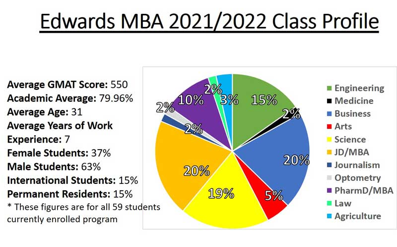

Upcoming recruitment events
January Virtual Info Sessions
- Friday, January 21, 2022 11am – 12pm (SK time) Register here
February Virtual Info Sessions
- Wednesday, February 9, 2022 4pm – 5pm (SK time) Register here
- Wednesday, February 16, 2022 11am – 12pm (SK time) Register here
March Virtual Info Sessions
- Friday, March 11, 2022 11am – 12pm (SK time) Register here
- Wednesday, March 16 2022 4pm – 5pm (SK time) Register here
Have questions or want to chat about the MBA program?
- Click here to chat with an advisor
- Click here to book an advising appointment
Learn More about the GMAT
We have the perfect virtual opportunity to learn about the Graduate Management Admission Test (GMAT) entrance exam. Join Kailin Burns, Manager, Market Development with GMAC, to get free insider tips and prep strategies directly from the source. All prospective graduate students are welcome to register for this online event. Edwards MBA staff will also be in attendance to answer questions. Please register for one session below:
Virtual GMAT Sessions
Thursday, January 27, 2022 1pm – 2pm (SK Time) Register here
Wednesday, March 23, 2022 12pm – 1pm (SK Time) Register here
Key Features
The Edwards Master of Business Administration program is a transformational experience that focuses around teambuilding, leadership and business strategy. You will learn the people skills of management such as how to manage, how to communicate effectively, and how to lead. Our students develop management skills that are both integrative and strategic, gaining a deeper understanding of organizations and their local and global context. Graduates then enter their professional endeavors with confidence, integrity and accountability. Faculty and colleagues within the Edwards MBA program will become valuable business contacts and life-long friends.
To view this video in Youku, click here!
No business degree? No problem!
Did you know that you don't have to have a bachelor's degree in Business to get an MBA? Lots of our students have bachelor degrees from non-business disciplines but want to learn the business skills that they'll need to succeed in their industries.

Here are a couple of our key features.-
Integrative Modules
Students are taught an integrated curriculum, teaching that attempts to break down barriers between subjects and make learning more meaningful to students. Major concepts are culled from these broad themes, and activities are planned that teach or inform of these concepts. An integrated curriculum requires accessing knowledge from all of the traditional subjects without labeling them as such. In addition, an integrated curriculum adds problem solving, social consciousness and real world application to the learning process making it a more comprehensive way of educating and of learning.
Edwards MBA students are required to complete two modules that focus on the integration of curricula from a suite of courses. The integrative modules use a case method approach, including instruction, discussion, analysis, presentation, and writing.
Scheduled twice during the program, these modules provide opportunities to integrate and apply the knowledge gained in functional areas. The first module is a building block within the program utilizing concepts learned to that point, leading to the final module which integrates the entire Edwards MBA curriculum.
The course is a blend of short lectures, in-class case analysis and discussion as well as both group and individual case analysis. Deliverables consist of discussion case analysis hand-ins, class group presentations and written case analysis for both modules and an individual written case analysis for the final module.
-
Essential Management Skills Retreat
Participate in a one week intensive experiential management skills class. This course will provide MBA students with skills to enhance self-understanding; improve interpersonal effectiveness and successfully manage in complex environments. Students will explore their personal management style and improve their communication skills; gain valuable insights into how to manage difficult people; conduct interest-based negotiations; and help their subordinates achieve improved levels of performance. We will also highlight the role of personal wellness as a critical aspect of management performance.
-
Edwards Career Services
Selecting a career is a process of research, knowledge and acquisition, and self-assessment. Learning about yourself – your interests, skills, values, and needs – and the spectrum of possible careers will enable you to make the most educated and appropriate decision for you and set you on your way for long-term career success.
Edwards Career Services will work with you to ensure you are well positioned to make the best possible employment decisions. We can provide you with the tools you need to successfully navigate your career path. Finding a satisfying position depends on your unique background, your energy, and your desire to succeed. Through an active partnership with Edwards Career Services, you can ensure your MBA education and the application of your own initiative will advance you towards your long-term goals.
Click any of the links below to learn more about what Edwards Career Services can do for you!
MBA Internship Program
Employment Statistics
Job Postings
Need a Mentor?
MBA Internship
The Edwards MBA Internship Program (EMIP) is an 8-month work experience which starts in January of the 1st year of your MBA degree. If you're admitted to EMIP, and you're successful in securing a placement, you must agree to complete your MBA over a minimum of two years.
The program is designed for students with little or no work experience in their desired field. An internship is a value-added component of the Edwards MBA Program where you're provided with an opportunity to implement the business theory and concepts from your MBA coursework. Work placements also provide increased opportunities for learning, mentorship and post-graduation employment.
To learn more about the Edwards MBA Internship Program, view the brochure here!

"I entered the Edwards MBA program to expand my understanding of business and enhance my career opportunities. I've found that the classroom experience offers a depth of knowledge and perspective that complements my analytical skills gained from the Engineering program. The part-time program is convenient for me to continue to work as an engineer while advancing my education. This program has given me a broader view of the business world and how to work effectively in all areas of it. I highly recommend the Edwards MBA to any engineer looking to advance their career."
Kenton Peterson, B. Eng, P.Eng
Bachelor of Science, Chemical Engineering
University of Saskatchewan
Current Edwards MBA Candidate
Program Architecture
The program's course structure can be broken down into three main categories:
-
Foundations of Management
MBA 829.3 Financial Statement Analysis - Analyze, interpret and evaluate an entity's financial statements and related information. The entities subject to analysis will be from a number of different industries which will enable a variety of accounting and financial issues to be explored.
MBA 819.3 Marketing for Organizational Decision Making - Focus on the role that marketing plays within an organization and how it integrates into organizational decision making. You will learn the innovative and imitative processes used to create a superior value-creating firm and the management and strategic processes whereby products and services are developed, priced, promoted and distributed.
MBA 825.3 Financial Management - Examine the role of finance in business decision making. Emphasis is placed on developing knowledge of theories, concepts, and analytical techniques used in business finance. You will begin to view finance as an integral part of business and learn that all business decisions involve some form of financial analysis.
MBA 865.3 Accounting for Planning & Decision Making - Understand the vital role that modern management accounting information plays in today's economy. You will create a foundation for understanding the basic management accounting concepts, definitions and calculations that are critical for making sound business decisions.
MBA 870.3 Corporate Finance - Master the skills and knowledge of finance and be able to make sound economic investment decisions, finance projects with confidence, and manage a firm's assets and liabilities more effectively. In this course, emphasis will be placed on measuring cash flows, valuing assets and investments, measuring risk and required returns, financing and structuring deals, and managing operational assets.
MBA 830.3 Operations Management - Explore activities related to the production of goods and delivery of services, as well as the improvement of key business processes. This course will examine the tools, principles and analytical techniques that managers and business analysts use to investigate key issues within the operations function.
-
Integrated Business Perspective
MBA 803.3 Business and Society - Develop the skills needed to analyze, formulate and implement firm strategy. This course is fundamental to understanding how business works and is a pre-requisite for all other MBA courses. Organization of creating an effective financial reporting strategy will also be examined.
MBA 889.3 Integrative Modules - Offered twice during the MBA program and taken in the final year of study, the integrated modules use a case method approach to integrate and apply the knowledge gained in functional areas. The course is a blend of short lectures, in-class case analysis and discussions as well as group and individual case analyses.
MBA 846.3 Entrepreneurship and Business Planning - Assess business plans from the viewpoint of entrepreneurial proponents as well as venture capital investors. You will be taught the concepts and tools needed to successfully develop and manage all components of a strategic business plan.
MBA 828.3 Tactical Strategy - Strategic management is the set of decisions and actions which leads to the development of an effective strategy to help achieve corporate goals and objectives. Learn how strategy helps to achieve corporate goals and objectives. Serving as the capstone course of the Edwards MBA program, this class will use performance measurement and risk management tools to maximize the benefit of the organization's strategic choices, integrating concepts learned in the program.
MBA 992.3 Venture Management - designed to assist students in developing and understanding the skills and tools required in preparing and presenting a complete and professional business plan for a business entity. All aspects of the business plan are discussed and integrated, including operations, human resources, marketing and finance. MBA students are expected to combine knowledge and skills to produce and present a professional business plan.
MBA 878.3 International Business and & Global Marketing - Examine the broad dynamics of the international environmental factors that influence business activities of the firm. Content includes demographic trends, economic development, natural and resource concerns, political landscape, and cultural diversity.
-
The Human Side of Management
MBA 813.3 Strategic Human Resources Management - Discuss the linkage between organizational strategy and human resources to achieve fit between the two. You will study fundamental concepts, with best practices to current management situations.
MBA 877.3 Leadership & Organizational Dynamics - Focus on the social forces within organizations and examine how they affect office politics, power in organizations, organizational culture and organizational change. You will study articles, cases, novels, illustrations, and utilize discussion to appreciate the totality of leadership in order to develop and hone your personal leadership philosophies.
MBA 885.3 Essential Management Skills Retreat - This course will provide MBA students with skills to enhance self-understanding; improve interpersonal effectiveness, and successfully manage in complex environments. Students will explore their personal management style and improve their communication skills; gain valuable insights into how to manage difficult people; conduct interest based negotiations; and help their subordinates achieve improved levels of performance.
Program Options
The Edwards MBA can be completed in only 12 months if taken full time, or part time in up to 36 months. Its intensive and highly integrated format will develop your management ability in an applied and useful way. More than that, you will learn the people skills of management such as how to manage yourself, how to communicate effectively and how to lead.
A decidedly unique aspect of this innovative MBA program is the focused learning and integration of business concepts. Each course is offered consecutively in a modular format. Courses are scheduled in three week durations creating an intensive learning environment that immerses students in the subject area while allowing flexibility in scheduling your MBA education. Furthermore, our students learn how business concepts are integrated into business decisions through a combination of applied courses, exercises, case studies and projects incorporating each functional business area.
The modular system is developed for students to accommodate their studies around their lifestyle. Those who prefer an intensive experience can complete the MBA program full-time in 12 months. Students who are working can choose the part time program and take up to 36 months to complete an MBA. A student who selects the part time plan can also later choose to fast track their studies to complete the degree in a shorter time period. With a variety of scheduling options, pursuing a Master of Business Administration at the Edwards School of Business can be effectively integrated into career goals to provide a transformational educational and life experience.
-
Full Time Calendar of Courses
If you are looking to fast track your MBA then the Edwards MBA Full Time Program is the right choice for you! You can complete the Full Time Program in only 12 months. Classes run from 4PM-8PM, Monday, Wednesday, Thursday and every third Saturday. Saturday classes run 9:00am - 4:30pm.
During your year as an Edwards MBA student, you will complete 12 courses, and 2 Integrative Modules. In addition, you will also complete your Venture Management Project from January to mid July. Download a Printable Copy
-
2 Year Part Time Calendar of Courses
The Edwards MBA 2 Year Program is the perfect solution for those students who are working! Classes run from 4PM-8PM, Monday, Wednesday, Thursday and every third Saturday. Saturday classes run 9am - 4:30 pm. While some flexibility is required from your employer, the 2 Year Program can be effectively integrated into your career goals!
You will begin your program in September, with Orientation, and then begin your first class as an Edwards MBA Student, MBA 803 Business and Society. You will complete 6 more classes from September until August.
In your second year, you will complete a total of 5 classes, and 2 Integrative Modules. In addition to these courses, you will also begin your Venture Management Project in January, and complete it by mid July. Download a Printable Copy
-
3 Year Part Time Calendar of Courses
The Edwards MBA 3 Year Program is the perfect solution for those students who require more time to get their MBA! Classes run from 4PM-8PM, Monday, Wednesday Thursday and every third Saturday. Saturday classes run from 9am - 4:30 pm. While some flexibility is required from your employer, the 3 Year Program can be effectively integrated into your career goals.
You will begin your program in September, with Orientation, and then begin your first class as an Edwards MBA Student, MBA 803 Business in Society. You will complete 4 more classes from September until August.
In your second year, you will complete a total of 4 classes.
In your third and final year you will complete 3 classes and 2 Integrative Modules. In addition to these courses, you will also begin your Venture Management Project in January, and complete it by mid July. Download a Printable Copy
Combined Degrees
Did you know that you can gain your MBA while working on another degree?
It's true! Edwards School of Business has worked with four other colleges at the University of Saskatchewan to develop combined and double degree options! You can now gain your MBA while working towards your Doctor of Medicine (MD), Doctor of Veterinary Medicine (DVM), Juris Doctor (JD) or Doctor of Pharmacy (PharmD). Click on one of the pages to your left to learn more about each combined or double degree option.
-
JD/MBA
The Edwards School of Business and the College of Law are pleased to announce the creation of a Dual Degree in business and in law. The program will be a three-year program allowing students to complete their law degree and their MBA simultaneously. Students will complete 39 credits in the MBA and 81 credits in the JD program for a total of 120 credits.
Expand Your Career Options: Students will leave the University of Saskatchewan prepared to practice either in a career in law and/ or a career in business. They will be well poised to act as corporate counsel in any large organization. The versatile skillset you gain through the JD/MBA could make you a prime candidate for high-level positions.
A JD/MBA can be extremely valuable for those pursing a public interest focused career path. In this sector, senior leaders are often tasked with heading a nonprofit or public institution, which requires significant management capabilities.
More credentials, less time. The JD /MBA Program is a 3 year program administered jointly by the Edwards School of Business and the College of Law at the University of Saskatchewan. The two degrees are complimentary and will allow students to complete two degrees in less time than if they were taken separately. (3 years versus 4) If you know you want both degrees eventually, you should consider doing them together.
How to Apply
Only students already accepted into the College of Law and completing their first year of studies are eligible to apply. Information will be sent to first year Law students in Term 2 in regards to Information Sessions, applications, etc. If you have any questions, please email mba@edwards.usask.ca
Tuition and Fees
Students admitted into the Dual JD/MBA will be considered for funding from the Edwards School of Business. Scholarships will be awarded based on academic achievement and all around application merits.
ROI: Holding a JD/MBA may also significantly increase your lifetime earnings.
Many law firms reward first-year associates that hold JD/MBAs with a special bonus and/or second-year salaries.
Additionally, no matter what your profession or industry, the combined JD/MBA degree will give you extra leverage when negotiating salaries throughout your career.
More information:
-
PharmD/MBA
The PharmD/MBA Program is a 4-year program administered jointly by the Edwards School of Business and the College of Pharmacy and Nutrition at the University of Saskatchewan. The two degrees are complimentary and will allow students to complete two degrees in less time than if they were taken separately (4 years versus 5). Students will leave the University of Saskatchewan prepared to practice either in a career in pharmacy and/or a career in business.
This program is open to current PharmD students in the College of Pharmacy and Nutrition, University of Saskatchewan, who must also apply to be admitted into the MBA program.
Admission Requirements
- An offer of admission to the PharmD program or up to 12 months of registration in the PharmD program. Students must express their interest in the combined program to the academic administrator in the College of Pharmacy & Nutrition.
- A recommendation for admission to the combined PharmD/MBA program by the College of Pharmacy and Nutrition. Selection will be based on the overall merits of the application.
- All posted admission requirements for the MBA program.
Information about the dual program is sent to current PharmD students throughout the year, and an information session occurs in Term 2 for all interested students.
Current PharmD students or applicants can contact Dr. Kerry Mansell kerry.mansell@usask.ca for more information.
Double Degree Options
-
DVM/MBA

"While completing my DVM, I discovered that I wanted to do something different than traditional veterinary practice. The MBA program provided a platform to apply skills from my unique background as well as build on new skill sets learned in the classroom from courses including leadership, finance, entrepreneurship and human resource management. In addition, the program introduced me to a very diverse group of people and facilitated networking."
Alexandra Muzzin, DVM, MBA
Doctor of Veterinary Medicine
University of Saskatchewan
Edwards School of Business MBAThe Edwards School of Business and the Western College of Veterinary Medicine are pleased to offer the DVM/MBA program. The DVM/MBA program is a 5-year program based on this proposal of inserting the one-year MBA program between the third and fourth year of the DVM program.
As veterinary medicine has become more corporate, and practice size in general is enlarging, the pharmaceutical industry and government offices continue to hire DVMs, and therefore, will all benefit from this combined DVM and business administration degree.
To commence the MBA program students would begin September 1st after successfully completing three years of veterinary medicine. The MBA program would run from September 1 to August 20 of the following year. Students would return to their clinical training year in the fifth year delaying completion of the DVM program by one year.
Make the most of your technical skills. Veterinary medicine is evolving very quickly in both companion and food animal sectors of private practice. It is quite common today to have veterinary practices in the range of 10-200 employees, and the management of such units is challenging and often requires significant human resources, financial and managerial skills. Individuals possessing strong business skills are often seriously lacking in the understanding of the animal industry, i.e., companion animal, food animal or other aspects of veterinary medicine such as corporate or government work.
Who is this a good fit for? The dual degree is an ideal fit for the future development of individuals who would typically be administrators in large practices or successful small business owners. Our outcomes assessment over the last 20 years has consistently shown that we are not providing enough business training within our DVM program to make our graduates comfortable in the business decisions they face in the first 2-3 years of practice. Although this degree will not make all DVM graduates business professionals, it will supplement the profession with more people to serve with human resource, financial and business management skills combined with the DVM.
How to Apply
Only five applicants per year are accepted to the DVM/MBA program. Students must have a four year baccalaureate degree and meet the minimum admission requirements of the MBA program, and be a current student in the WCVM at the University of Saskatchewan.
Students will be recommended by the WCVM but must meet the minimum requirements of the MBA admissions process and will be vetted by the MBA admissions committee.
-
MD/MBA

"I chose the Edwards MBA program to gain a foundation in business before I begin studying medicine. Coming from the sciences, I would not have had exposure to business skills and concepts required to make informed decisions that affect healthcare, or the networking opportunities. Having an MBA in medicine will be beneficial in helping me understand the business implications of the decisions that physicians make. An MBA/MD will help me bridge the gap between clinical practice and business management, whether that is running a private clinic or informing government policy."
Bjorn Hunter
B.Sc in Microbiology & Immunology, U of S
Current Edwards MBA/MD CandidateThe Edwards School of Business and the College of Medicine at the University of Saskatchewan currently offer an MD/MBA program. This program is designed to create effective managers and teach leadership roles in the Medical profession.
Students admitted to the MD/MBA program would be, in effect, deferring their MD program admission by 1 year to pursue the regular-stream 12-month full-time Edwards MBA program from September to August of the year of admission. This program is only open to student who are accepted to the College of Medicine at the University of Saskatchewan.
Who is this a good fit for? This combined degree will provide the tools and knowledge necessary for Doctors of Medicine looking to advance to a manager position in a wide range of healthcare practices. From publicly funded practices such as small local clinics and large hospital facilities to privately owned corporations in the pharma/biotechnology and health insurance industries, successful graduates of the MD/MBA program will have the medical and business knowledge needed to quickly stand out among their peers.
How to Apply
Up to two applicants per ear can be accepted into the dual MD/MBA stream. The MD/MBA program effectively begins at the admissions level. Students applying to the joint program must be vetted by both Colleges. Students must have completed a four year baccalaureate degree.
Candidates would be screened first for the MD program on the basis of academic performance (GPA) and non-academic qualities (multiple-mini interviews or MMI). Students will be recommended by the College of Medicine but must meet the minimum requirements of the MBA admissions process and will be vetted by the MBA admissions committee.
Acceptance into both programs means the applicant gets a deferral on starting medicine for one year. The applicant immediately starts In the MBA Program.
Application Deadlines
Apply early!
Applications are accepted on an ongoing basis and are evaluated in the order in which they are completed. Therefore, it is to your advantage to submit your completed application as early as possible, as enrollment is limited. The admission process is competitive and later applications are at a disadvantage.
Admission Requirements
-
What to include in your application
The Edwards MBA assesses applicants on a composite basis for admission purposes. We look at a variety of factors when making admission decisions including undergraduate degree, grade point average, work experience, GMAT score, and reference letters. An interview may be required.
Your Completed Admission Package Includes:
- Completed Online Application Form and $120 Application Fee
- Official GMAT Score
- English Proficiency Scores (if required)
- A transcript of your academic record
- Three Letters of Reference
- Current Resume
- Letter of Intent
All documents must be uploaded to your online application.
-
Three or Four Year Undergraduate Degree
A three or four year undergraduate degree from a recognized university (as deemed by the University of Saskatchewan) with a minimum 70% in the last two years of study. Unofficial transcripts from all post-secondary institutions that you have attended must be uploaded to your application. Transcripts from the University of Saskatchewan do not need to be uploaded, but are required from all other institutions you have attended. For countries where degree certificates are issued, they must also be uploaded. If accepted, an official transcript of your academic record is to be sent directly from each institution attended.
Visit Countries and Qualifications for a listing of countries and the equivalent academic requirements.
-
GMAT (Graduate Management Admissions Test)
GMAT or GMAT Online test score (https://www.mba.com/exams/gmat). Minimum score of 500, however, competitive scores are 550 or better.
-
Letters of Reference
Three (3) confidential letters of recommendation. The Edwards MBA requires you to submit 3 confidential letters of recommendation, from professors or others acquainted sufficiently with your training and experience to express an opinion on your ability to undertake graduate training. At least one of these must be an academic reference.
- Contact your referees and ask them to provide a reference for you for the Edwards MBA program, and obtain an up to date email address.
- You will then fill out your referee’s complete information on the online application form, and enter their current email address.
- Once your application is completed, your referee’s will be sent a link where they can fill out an online form for your reference letter
-
Work Experience
The Edwards MBA does not have work experience requirement. If you have work experience it will be considered. However for applicants wishing to enter the program straight out of their undergraduate degree's, greater emphasis will be placed on your academic components
-
Letter of Intent
Your letter of intent is a chance to tell the Edwards MBA Selection Committee what unique and valuable contributions you can make to the Edwards MBA program.
Provide a brief description of your business and educational background, and your goals for the future. How will an MBA help you achieve your goals? Describe briefly what piqued you interest in achieving an MBA, and what you hope to get out of the program.
Discuss why you have decided to apply to the Edwards MBA program, and why it is a good fit for you. What specific parts of the Edwards MBA program are you looking forward too?
Make sure your letter of intent is unique and specific to the Edwards MBA program. We don't want to read generic letters that sound like they could have been sent to any school; We want to know why you have chosen the Edwards MBA, and why we should choose you!
-
Resume
Don’t just update and print off your last resume, take the time to understand what the Edwards MBA program is looking for in your resume.
The MBA Selection Committee reviews your resume to find out the number of years of professional experience, jobs and positions held, previous employers, etc., to establish a work experience value for our composite admission scale.
Make sure you outline the length of employment for each position on your resume. In order to evaluate your professional performance, the admission officers will measure the duration of each of your jobs, and the evolution of the responsibilities you have had. By following these simple steps, your resume can improve your chances for success!
No Work Experience? No Problem! For applicants wishing to enter the program straight out of their undergraduate degree's, greater emphasis will be placed on your academic components. You will still be required to submit a current resume.
-
Proof of English Proficiency
Proof of English proficiency may be required for international applicants and for applicants whose first language is not English. See the College of Graduate and Postdoctoral Studies Academic Information and Policies for more information. *To see whether you will be exempt from this requirement, Click Here.
English Training for International Students
International students who must submit an English Language Proficiency test score will be enrolled in our Language and Communications for Graduate Management Program Study seminar which takes place in Term 1. Normally this course is $700 for students to take, but the Edwards MBA office is willing to pay the tuition for admitted international students. Students who complete this course will receive a certificate of completion.
-
Chat with Edwards MBA Admissions
We're here to help answer your queries related to program content, admission criteria, application process, scholarships and fees. Click here to chat with an advisor. We look forward to hearing from you.
Tuition and Financial Aid
-
Tuition
Canadian Student Tuition
International Student Tuition
$30,306
$54,854
Tuition fees - Program tuition fees are assessed each by the University of Saskatchewan in May of each year. Fees are charged each term and are based on the courses registered for within the respective terms. The University of Saskatchewan academic calendar is based on four terms per year. Graduate students must register at the beginning of each academic year and arrange for payment of the required fees.
University of Saskatchewan
Student Fees
Textbooks and
Course Materials
$930 per year (approx)
$1350 (approx)
Student Fees - All graduate students, including international graduate students, must pay student fees. These fees are subject to review and revision at any time, and, they are non-refundable after the add/drop deadline for a given term. Current fees are posted on the Money Matters website. For information on how and when to pay graduate fees check the University Course Calendar for Payment of Tuition and Compulsory Fees.
Textbooks and Course Materials - Estimates are about $1,350 for the entire program. This does not include the costs of a computer or other electronic equipment. Textbooks are available at book exchanges in the fall, from students advertising on line, or from posted ads on one of the many bulletin boards on campus. You can purchase books online, including second hand books, from the Uof S Bookstore website.
Computer Equipment - A laptop computer is required. The University of Saskatchewan Computer Store has various purchasing options, and Edwards MBA students are eligible for educational pricing on all software required for program use. The Edwards School of Business provides complete tech support for students, regardless of where your computer was purchased.
-
Incoming Student Awards
We understand that education is a heavy investment and we are here to help. The Edwards Graduate Program Office administers a number of awards and bursaries with a total value of more than $100,000 annually for incoming students. Awards have specific criteria based on academic achievement, financial need and student background.
Award applications submitted by the stated deadline will be considered from incoming admitted students who have confirmed their attendance with a tuition deposit. Completed applications can be emailed to mba@edwards.usask.ca.
Additional awards which are administered by the College of Graduate and Postdoctoral Studies are also available to Edwards MBA students. For further information on awards administered by the College of Graduate and Postdoctoral Studies, visit Award Search and select Business Administration for the Department field.
Your completed Award Application Package Includes:
- $750 Tuition Deposit – payable by credit card
- 2021/2022 Incoming Student Award Application Form - Download the Form
- Financial Need Calculator* (if applicable). Please ensure you get the confirmation message, as per instructions below.
- Supporting documents for each award you are applying for as required
Submit your completed Award Application package in PDF format to:
Edwards MBA Program Office
Email: mba@edwards.usask.ca
All packages must be received by July 9, 2021.
*Financial Need Calculator
For some awards and bursaries, you are required to complete the Financial Need Calculator. You are required to complete the Financial Need Calculator only once, even if you are applying for multiple awards.
1) Log into the Scholarships and Bursaries channel in PAWS (paws.usask.ca/go/awards)
2) Click on the "Apply for Awards"* green button
3) Select the “2021-2022 Edwards Graduate Students Financial Need Calculator from the Current Students “Select Application Form” drop-down menu; click “Apply”Once an application has been started, it will be listed under the “Existing Applications” header on that same webpage.
Once you have completed the form correctly, you will receive a message after you submit that says "SUCCESS: Selected application was successfully submitted."
If you have already completed the Financial Need Calculator in PAWS for the 2021-20212 academic year, you do not need to complete it again unless your financial situation has changed. Ensure that you submit receipts, estimates, etc. for any Extraordinary Expenses you claim to awards.documents@usask.ca by the July 9th, 2021 deadline.
2021 MBA Incoming Student Awards
The following awards are administered by the Edwards School of Business and are available to students entering the Edwards MBA program:
Grandey Leadership MBA Entrance Award
This award was established through a donation from the Grandey Leadership Initiatives Fund at the Edwards School of Business. The purpose of this award is to offer financial assistance and recognize leadership in the community of students entering the Master of Business Administration program at the University of Saskatchewan.
This award is open to students entering the Edwards MBA Program at the University of Saskatchewan. To be eligible, candidates must:
- Demonstrate financial need by completing the on-line Financial Need Calculator
- Submit a statement of between 500 and 600 words demonstrating leadership in their community.
- Not have received any other awards in excess of $5,000 offered through the MBA program.
Selection will be made on the overall merits of the MBA admission package and on the merits of the leadership statement, as determined by the Award Committee.
Award Value: One award valued at $9,000 (Subject to confirmation).
Grandey MBA Entrance Prize
This award was established through a donation from the Grandey Leadership Initiative Fund. This award is open to students entering the Edwards MBA Program at the University of Saskatchewan. Selection will be made on the basis of overall merits of the admission package, as determined by the Award Committee. There is no application necessary for this prize. All accepted students who have confirmed their attendance with a tuition deposit will be considered.
Award Value: One award valued at $2,500 (Subject to confirmation).
Herb and Lorne Larson Master of Business Administration Program Bursary
This bursary was established through a donation from Lorne Larson (BA 1958, BUSCER 1958) in recognition of his late father, Herbert Larson, who received his Certificate in Accounting from the University of Saskatchewan in 1925.
To be eligible for this award, students must:
- Be entering their 1st year of the Edwards MBA program
- Demonstrate financial need
Preference will be given to applicants who have a previous University of Saskatchewan degree, and who have graduated from a high school in the province of Saskatchewan, as determined by the Award Committee.
Award Value: One award valued at $2,000 (Subject to confirmation).
James Chim Family Foundation MBA Entrance Scholarship
This scholarship was established through a gift from the James Chim Family Foundation. The purpose of this scholarship it to attract outstanding students entering the one-year or two-year program in the Masters of Business Administration (MBA) program at the Edwards School of Business, based on the overall MBA admission application as well as the submitted statement as determined by the Award Committee.
To be eligible for this award, students must:
- Be entering the one-year or two-year program for one year only in the Masters of Business Administration (MBA) program at the Edwards School of Business at year of entrance.
- Submit a statement of no more than two pages outlining what ACTIONS the student would propose to take as a successful alumni to enhance the awareness and reputation of the Edwards MBA in an effort to attract high quality applicants
- not hold this award in conjunction with another MBA administered award of $5,000 or greater in the same academic year.
Selection will be made on the basis of overall merits of the MBA admission package and on the merits of the written statement, as determined by the Award Committee.
Award Value: One annual award valued at $15,000.
MBA – DVM Entrance Award
This award is funded jointly between the Edwards School of Business and the Western College of Veterinary Medicine (WCVM). This award is open to current or graduated students from the WCVM who are entering the MBA program at the University of Saskatchewan. Preference will be given to current DVM students. Selection will be based on overall merits of the MBA admission package, as determined by the Award Committee.
Students may not hold this award in conjunction with another MBA administered award of $5,000 or greater in the same academic year.
Award Value: Number and value are subject to confirmation.
MBA – PharmD Entrance Award
The award is open to students who have been accepted into the dual MBA – PharmD stream. Selection will be based on overall merits of the MBA admission package, as determined by the Award Committee.
Students may not hold this award in conjunction with another MBA administered award of $5,000 or greater in the same academic year.
Award Value: One annual award, value up to $10,000 based on financial resources. (Subject to confirmation)
N. Murray Edwards JD/MBA Entrance Award
This award is funded through the N. Murray Edwards endowment fund. The award is open to students accepted to the combined JD/MBA Program, and who are entering the second year of the combined program. Selection will be made on the basis of overall merits of the JD/MBA admission package, as determined by the Award Committee.
Students may not hold this award in conjunction with another MBA administered award of $5,000 or greater in the same academic year.
Award Value: Up to five annual awards valued at $10,000 each. (Subject to confirmation)
N. Murray Edwards MBA Entrance Award
These awards are funded through the N. Murray Edwards endowment fund. These awards are open to students entering the Edwards MBA Program at the University of Saskatchewan. To be eligible, candidates must:
- Demonstrate financial need by completing the on-line Financial Need Calculator
Selection will be made on the basis of overall merits of the MBA admission package, as determined by the Award Committee. Students may not hold this award in conjunction with another MBA administered award of $5,000 or greater in the same academic year.
Award Value: Three annual awards of $10,000. (Subject to confirmation)
N. Murray Edwards MBA – MD Entrance Award
This award is funded through the N. Murray Edwards Endowment Fund. The award is open to current or graduated MD students from the College of Medicine who are entering the MBA program at the University of Saskatchewan. Preference will be given to current MD students. Selection will be based on overall merits of the MBA admission package, as determined by the Award Committee.
Students may not hold this award in conjunction with another MBA administered award of $5,000 or greater in the same academic year.
Award Value: Two awards of $10,000. (Subject to confirmation)
Philip Leong International Scholarship in Business
This award has been established from a donation from University of Saskatchewan alumnus, Mr. Philip Leong (BA 1984).
Application to this award is open to international students pursuing a Master of Science in Finance degree, a Master of Business Administration degree or a Master of Science in Marketing degree in the Edwards School of Business.
Selection will be based on academic achievement, as determined by the Award Committee.
Award Value: One award valued at $3,800.00 (subject to final confirmation).
Scotiabank Aboriginal Business Education Award
This award has been established from a donation from the Scotiabank to support an award for an Aboriginal graduate student pursuing studies in the Master of Business Administration Program at the University of Saskatchewan. Application to this award is open to Aboriginal students who have been accepted for admission to the Master of Business Administration Program at the University of Saskatchewan. To be eligible, candidates must:
- Demonstrate financial need as determined by the Award Committee.
Applicants must submit the following with their award application package:
- Individuals requesting to be considered for this award must forward a letter requesting consideration.
- All applicants will be required to provide documentation verifying their Aboriginal ancestry, which included applicants of Indian, Inuit or Metis ancestry.
Selection will be based on the quality of the application package submitted for admission to the MBA Program, as determined by the Award Committee.
Award Value: One award valued at $10,000. (Subject to confirmation)
Wawanesa Mutual Insurance Company MBA Entrance Award
This award has been established from a donation from the Wawanesa Mutual Insurance Company to support an award for students pursuing a Master of Business Administration degree at the University of Saskatchewan.
Application to this award is open to students entering the MBA degree program. Selection will be made on the basis of overall merits of the admission package accepted for admission in the MBA program at the University of Saskatchewan, and financial need, as determined by the Award committee.
Award Value: One award valued at $440.00 (subject to final confirmation).
-
Canadian Students
Canadian students have access to numerous funding options to help them pay for an MBA, such as grants, private loans, fellowships, scholarships and bursaries, and government loans.

Canada Student Loans and Grants
The Government of Canada offers Canada Student Loans to full and part time post-secondary students who demonstrate financial need in most provinces and territories across Canada.
The new Canada Student Grants Program (CSGP) consolidates federal student financial assistance grants into a single program that will provide more effective support for students and families and help them manage the cost of post-secondary education. Learn More!

Student Awards
There are hundreds of scholarships, bursaries, grants, fellowships and other forms of financial assistance available to students across Canada. Student Awards is the Canadian financial awards database that allows students to be matched with awards they are eligible for, and provides them with details on application procedures, deadlines and contact information. Learn More!

Scholarships Canada
Sign up to search through an extensive database to find scholarships, bursaries and grants. You'll also find information about student loans, applications and budget planning. Learn More!
-
International Students
International students have various options for funding their Canadian MBA. External financial aid is also available in the form of personal lines of credit, credit cards, family loans, etc. International students should explore their options for financial aid in the form of loans and scholarships from their home countries.

The Paras Education Foundation
The Paras Education Foundation assists international students in obtaining study abroad loans for more than 42 countries including Canada, the United States, the United Kingdom, Australia, and New Zealand. No collateral security is necessary. Learn More!

International Financial Aid and College Scholarship Search
IEFA is the premier resource for financial aid, college scholarship and grant information for US and international students wishing to study abroad. At this site, you will find the most comprehensive college scholarship search and grant listings plus international student loan programs and other information to promote study abroad. Learn More!

Government of Canada Scholarships for Non-Canadians
Browse through the Government of Canada website on scholarship opportunities for non-Canadians. Awards are available to foreign students for study/research in Canada. Learn More!
-
RBC Professional Student Package
The Edwards MBA is pleased to announce their partnership with RBC Royal Bank of Canada to offer a professional student package!
Student Line of Credit
For students accepted into the Edwards MBA program, RBC offers the Royal Student Credit Line for Professional Studies. Standard Royal Bank credit criteria applies, however RBC is currently able to use projected income allowing most students to qualify on their own without a co-signer. The limit currently offered is The maximum limit currently offered to Edwards MBA students with RBC is $45,000. This limit excludes any government student loans and existing Royal Credit lines for students. The limit is reviewed on an individual basis.
An interest-only payment is due monthly at preferential rate of Prime plus 0.5%. This rate applies while you are enrolled in school and during repayment as well.
You will also have the convenience of accessing funds through RBC banking machines or online and telephone banking.

Everyday banking
For everyday banking RBC offers either the RBC Student Banking Account or RBC No Limit Student Banking Accounts.
Visa
The signature RBC Rewards Visa (upon credit approval) is free for those with an RBC Student Banking Account. With this Visa card you will earn 1 reward point for every $1 spent on the card. The card also comes with purchase protection, extended warranty and auto rental collision insurance.
With RBC Rewards points you can earn gift cards from The Bay, Sears, Cineplex, Starbucks and many others listed on the RBC Rewards website. 3000 points = $25. You can also choose RBC Financial Rewards or travel rewards.
For more details please see www.rbcrewards.com
Contact:
Anika Mysha
Royal Bank of Canada
1402 College Drive
Saskatoon, SK, S7N 0W7
T (306) 668-3877
Ready to Study With Us?
If you would like more information about the Master of Business Administration, please contact us:
Graduate Programs Office
Edwards School of Business
University of Saskatchewan
25 Campus Drive
Saskatoon, Saskatchewan, Canada
S7N 5A7